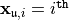
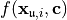
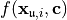
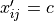
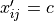

Integrand Class¶
-
class
algorithms.integrand.__init__.Integrand(nominal_value=None)¶ -
__init__(nominal_value=None)¶ Specify and generate values
 for
for  .
.Any sublcass of Integrand must include the method, g(self, x, coordIndex)
- Parameters
nominal_value –
 such that
such that 
-
abstract
g(x, coord_index)¶ Original integrand to be integrated
- Parameters
x – nodes,  row of an
 matrix
matrixcoord_index – set of those coordinates in sequence needed,

- Returns
 matrix with values 
where if
matrix with values 
where if  , then
, then  for
for  , and  otherwise
, and  otherwise
-
transform_variable(measure, distribution)¶ This method performs the necessary variable transformation to put the original integrand in the form required by the DiscreteDistributon object starting from the original Measure object
- Parameters
measure (Measure) – the Measure object that defines the integral
distribution (DiscreteDistribution) – the discrete distribution object that is sampled from
Returns: transformed integrand
-
-
class
algorithms.integrand.AsianCall.AsianCall(BMmeasure=None, volatility=0.5, start_price=30, strike_price=25, nominal_value=None)¶ Specify and generate payoff values of an Asian Call option
-
g(x, ignore)¶ Original integrand to be integrated
- Parameters
x – nodes, row of an
matrixcoord_index – set of those coordinates in sequence needed,
- Returns
- matrix with values
where if , then
for , and otherwise
-
-
class
algorithms.integrand.Keister.Keister(nominal_value=None)¶ Specify and generate values
 for
for 
The standard example integrates the Keister integrand with respect to an IID Gaussian distribution with variance 1/2
Keister, Multidimensional Quadrature Algorithms, Computers in Physics, 10, pp.119-122, 1996.
-
g(x, coord_index)¶ Original integrand to be integrated
- Parameters
x – nodes, row of an
matrixcoord_index – set of those coordinates in sequence needed,
- Returns
- matrix with values
where if , then
for , and otherwise